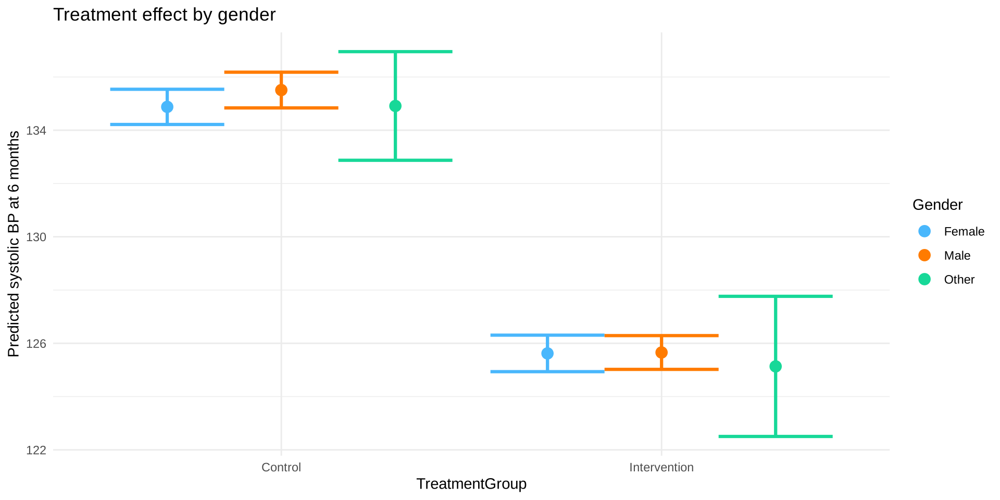
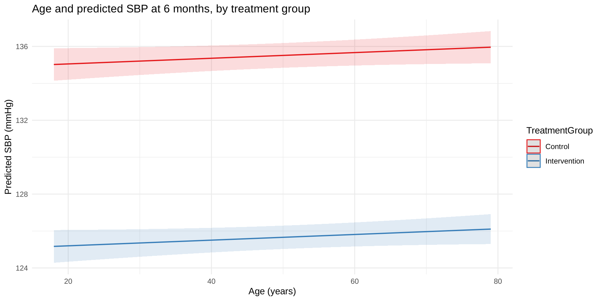
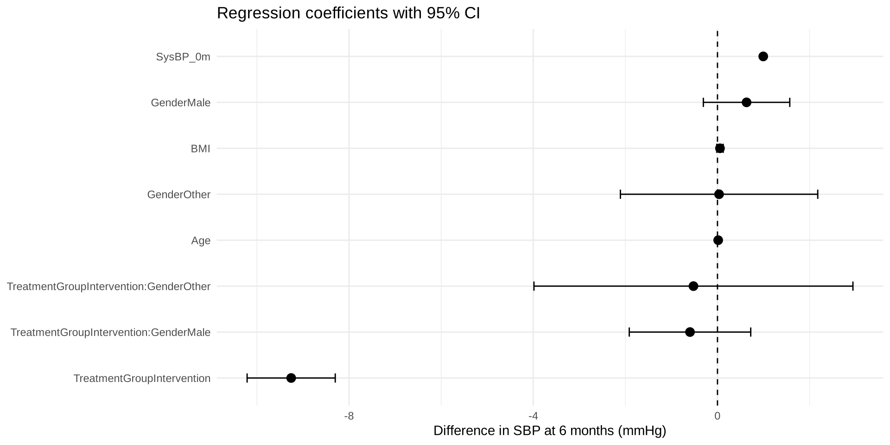
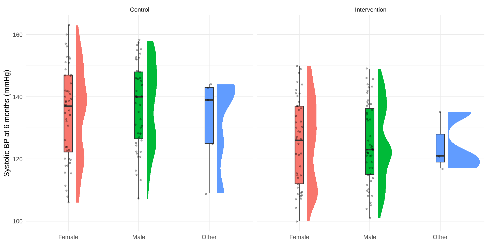
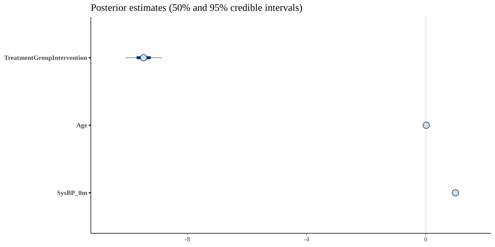

Interactions & Effect Plots
Goal: Show complex statistical relationships
Data: 200 simulated patients of a blood-pressure trial (data/PublicHealth_BP_Dataset.xlsx, see data/README.md).
The model adjusts the 6-month SBP for baseline SBP, age and BMI, and lets the treatment effect differ by gender.

The intervention lowers SBP by about 9 mmHg in every gender group; the interaction test agrees (anova(model), row TreatmentGroup:Gender: p = 0.67). Test an interaction, do not judge it by eye.

Model-based predictions with confidence bands, other variables held at their mean or reference level.
coef_data <- tidy(model, conf.int = TRUE) |> filter(term != "(Intercept)")
ggplot(coef_data, aes(x = estimate, y = reorder(term, estimate))) +
geom_vline(xintercept = 0, linetype = "dashed") +
geom_errorbar(aes(xmin = conf.low, xmax = conf.high), width = 0.2, orientation = "y") +
geom_point(size = 3) +
labs(title = "Regression coefficients with 95% CI", x = "Difference in SBP at 6 months (mmHg)", y = NULL) +
theme_minimal()
Standard in medical research. Coefficients on different scales (per year of age vs per group) are not comparable in size.
library(ggdist)
health_data |>
filter(!is.na(TreatmentGroup), !is.na(Gender)) |>
ggplot(aes(x = Gender, y = SysBP_6m, fill = Gender)) +
stat_halfeye(adjust = 0.6, width = 0.5, justification = -0.25, .width = 0, point_colour = NA) +
geom_boxplot(width = 0.12, outlier.shape = NA) +
geom_jitter(width = 0.05, alpha = 0.3, size = 0.8) +
facet_wrap(~ TreatmentGroup) +
labs(y = "Systolic BP at 6 months (mmHg)", x = NULL) +
theme_minimal() + theme(legend.position = "none")
Distribution, summary and raw data at once, for nested groups.
library(rstanarm)
bayes_model <- stan_glm(SysBP_6m ~ TreatmentGroup + Age + SysBP_0m, data = health_data,
chains = 2, iter = 1000, seed = 2026, refresh = 0)
plot(bayes_model, pars = c("TreatmentGroupIntervention", "Age", "SysBP_0m"), prob = 0.5, prob_outer = 0.95) +
labs(title = "Posterior estimates (50% and 95% credible intervals)")
A 95% credible interval holds the coefficient with 95% probability, given the model and its (weak, default) priors.
Advanced comparison techniques:
Next: Time Series Advanced